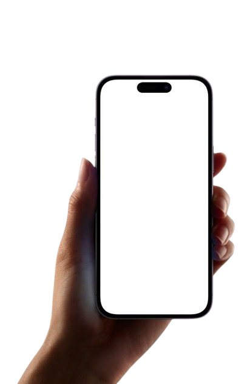
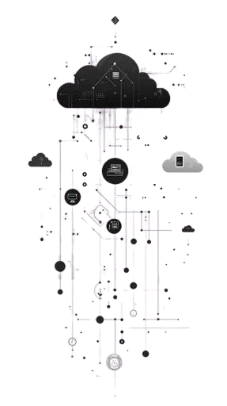
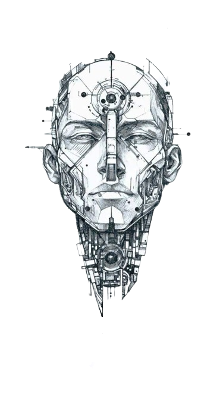
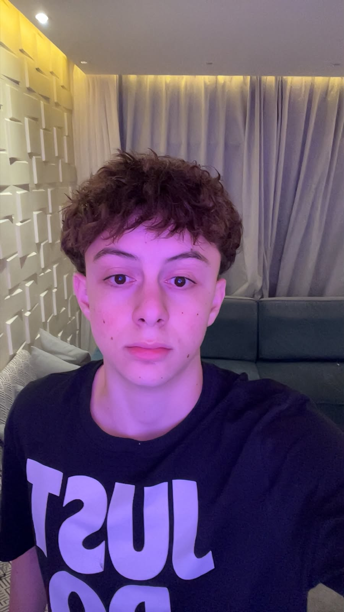

REDEFININDO A EXPERIÊNCIA DE CÂMERA
Hoje muitos usuários utilizam a câmera do smartphone apenas no modo básico, seja por interfaces complexas, falta de clareza nos modos ou ausência de recursos adaptados ao dia a dia.
O nosso desafio consiste justamente em superar esse fato. Para mudar isso, tivemos que ir além da tecnologia convencional e repensar a experiência de captura digital, criando soluções inteligentes, intuitivas e centradas nas necessidades dos usuários.
Pensando nisso, desenvolvemos e lhe apresentamos nossas soluções inovadoras:
Tecnologia & Avanço
JOVI Vision AI
A JOVI VisionAI é uma solução pioneira em visão computacional, desenvolvida para redefinir a interação entre usuários e sistemas de captura digital. Através de algoritmos inteligentes e processamento adaptativo, elevamos o padrão de fotografia computacional, entregando uma experiência fluida, inclusiva e de alta performance.
.png)
Flash Frontal
Uma reengenharia do sistema de iluminação para selfies e videochamadas. O algoritmo de Flash Adaptativo monitora os níveis de lux do ambiente em tempo real para ajustar a intensidade da luz emitida pela tela. Com três modos de operação — manual, automático e desativado — a funcionalidade assegura a exposição perfeita da cena, simulando o comportamento de estúdios fotográficos profissionais via software.
Descubra
Nuvem
Eleve o potencial do seu dispositivo com nossa infraestrutura de processamento remoto. De forma opcional e segura, o JOVI VisionAI utiliza servidores de alta performance para realizar a recuperação avançada de detalhes e o refinamento estético de nível profissional. Uma solução que une o poder da nuvem à liberdade de escolha do usuário, garantindo resultados superiores com um simples clique.
Descubra
Inteligência Artificial
O JOVI VisionAI é um ecossistema de visão computacional de alto desempenho que redefine a convergência entre hardware e inteligência artificial. Através de modelos de aprendizado de máquina otimizados para execução on-device, oferecemos processamento de imagem em tempo real com total privacidade. Nossa arquitetura permite não apenas o refinamento estético automático, mas também o reconhecimento inteligente de padrões, criando uma jornada de fotografia assistida e totalmente personalizada sob os pilares da Total Experience (TX).
Descubra

Público-Alvo
O foco principal do Jovi VisionAI são os jovens em período estudantil, que transitam diariamente entre o rigor acadêmico, a vida social e a necessidade de autoexpressão.
Para esse público, o celular é uma ferramenta essencial que precisa acompanhar o ritmo da rotina, já que ele vai muito além de que uma ferramenta para estudo; é um aliado para registrar momentos, criar conteúdo e salvar imagens;
Com isso, conseguimos oferecer selfies perfeitas em qualquer iluminação através do Flash Frontal Adaptativo; um aparelho com processamento avançado para resultados profissionais sem sobrecargas através do suporte da Nuvem; e portador de uma tecnologia que entende o contexto de cada momento por meio da Inteligência Artificial on-device, entregando experiência inteligente, veloz e total privacidade para registrar tudo sem complicações.
Galeria
Confira algumas das imagens capturadas com o JOVI Vision AI!

QUEM SOMOS?
Conheça os integrantes da equipe e responsáveis pelo desenvolvimento da JOVI Vision AI.
Cesar
Desenvolvedor
Enzo
Desenvolvedor

Enzo Castilho
Desenvolvedor
Fernando
Desenvolvedor
Wesley
Desenvolvedor